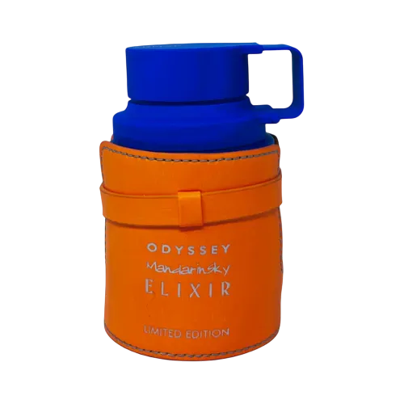

Odyssey Mandarin Sky Elixir by Armaf as an authentic decant — a mandarin,caramel,vanilla,warm-spicy; oriental,gourmand family. inspired by Scandal Absolute / Invictus Victory Elixir. Ships across India with free shipping over ₹999 on 2+ decants.
| Size | Price |
|---|---|
| 3ml | ₹95 |
| 5ml | ₹145 |
| 7.5ml | ₹215 |
| 10ml | ₹269 |
| 20ml | ₹495 |
| 30ml | ₹679 |
Currently in stock for decants.
Copy your choice and message us on WhatsApp — we confirm stock and payment instantly.
Order on WhatsAppCall +91 93555 33509Notes / profile: mandarin,caramel,vanilla,warm-spicy; oriental,gourmand family.
Best for: fall / winter seasons, day and evening, for date-night, party, cold, mild weather.
Mood: cozy,sexy.
Reminds me of: Scandal Absolute / Invictus Victory Elixir.
References: Fragrantica Parfumo
It is a high-quality interpretation inspired by Scandal Absolute / Invictus Victory Elixir. Perfume enthusiasts in India often pick it as an affordable alternative to that profile.
IRAM Perfume sells authentic decants of Odyssey Mandarin Sky Elixir by Armaf at 3ml ₹95, 5ml ₹145, 7.5ml ₹215, 10ml ₹269, 20ml ₹495 and 30ml ₹679. Shipping is free on 2-decant orders above ₹999. Full bottles are available on request.
A unisex fragrance, it works best during fall / winter seasons, day and evening, for date-night, party, cold, mild weather. It leans cozy,sexy in character with a mandarin,caramel,vanilla,warm-spicy; oriental,gourmand family profile.